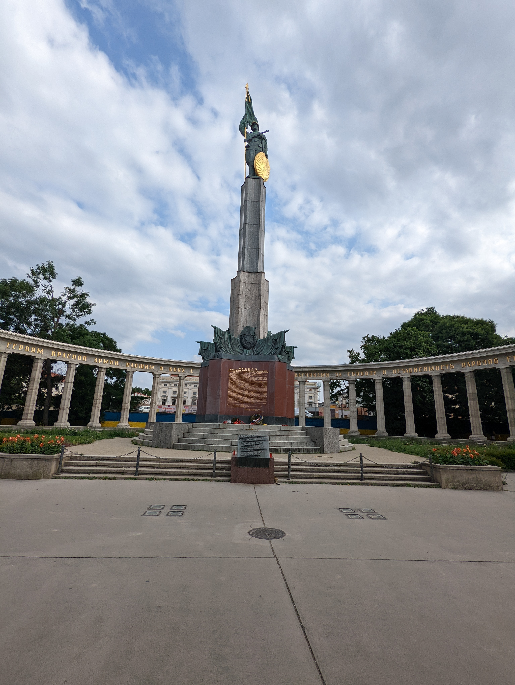
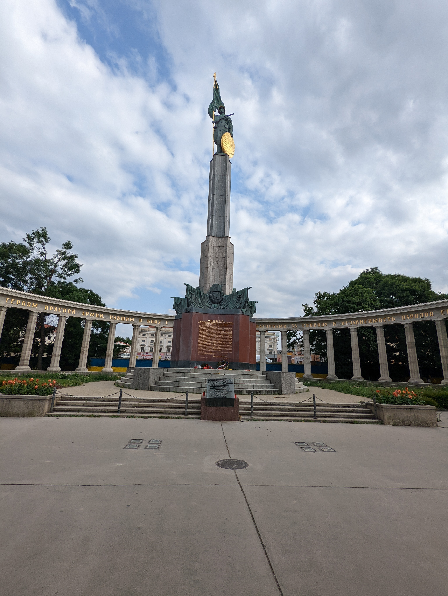

This was the second stop of my interailing trip following; Paris, Brussels and Ghent During my 2 night stay at The Flying Pig Hostel, Downtown ,I visited the Body Worlds Museum the first day. However most of my time was spent exploring the area on foot. Taking in the unique architecure of the city
This was my last stop on my interailing trip, where i stayed at Wombat City Hostel This was one of my favourite loactions in central Europe. The architecture is astonishing, with beautiful parks and lovely cafes. The art scene is also very present all throughout the city. During my time here i visited The Albertina a huge gallery with astonishing paintings.
 

after moving from the North-East of Germany in Hamburg I moved to Berlin, where i stayed at Grand Hostel Berlin. Although located far from the city centre, the view provided (left image) from the hostel room made up for it. A highlight of my time here was visiting the rooftop bar called Klunkerkranich, revealing a beautiful skyline of the City